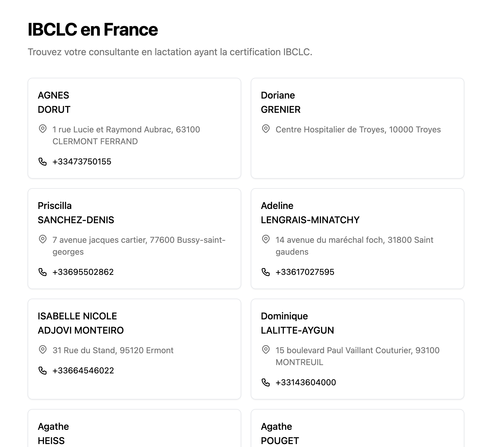

Comment trouver une IBCLC en France ?
TL;DR On peut en trouver ici ibclc.vercel.app.
Selon l’Enquête Nationale Périnatale sur l’allaitement en France de 2021, 48,7% des femmes évoquent un allaitement compliqué comme source de difficulté impactant leur santé mentale à leur retour à domicile.
Il existe pourtant des professionnelles de santé certifiées pour l'accompagnement à l'allaitement: des IBCLC (International Board Certified Lactation Consultant).
Aujourd'hui en France, c'est difficile
de trouver une consultante en lactation IBCLC.
Ma femme ayant passé sa certification courant 2024, j'ai entrepris d'apporter ma pierre à l'édifice.
J'ai donc:
- Scrappé les quelques sites existant avec Puppeteer pour récupérer un maximum de noms, prénoms, adresses et numéros de téléphone
- Mis tout ça dans Supabase, un BaaS (Backend As A Service) open source
- Codé une petite app en React (oui, j'aurais plutôt dû faire ça en Vanilla)
- Généré une UI avec v0.dev
- Déployé ça sur
 Vercel
Vercel
Vous pouvez trouver le résultat ici: ibclc.vercel.app.
Et voilà !